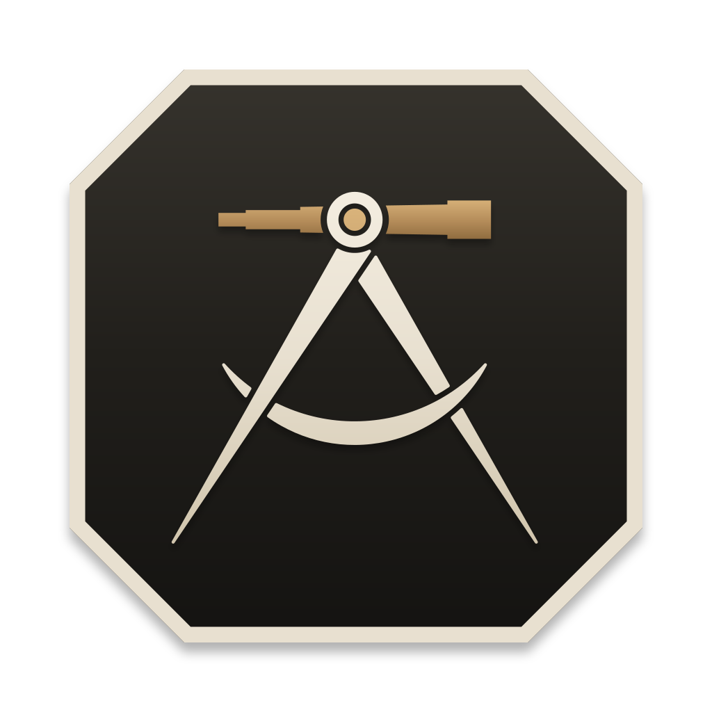
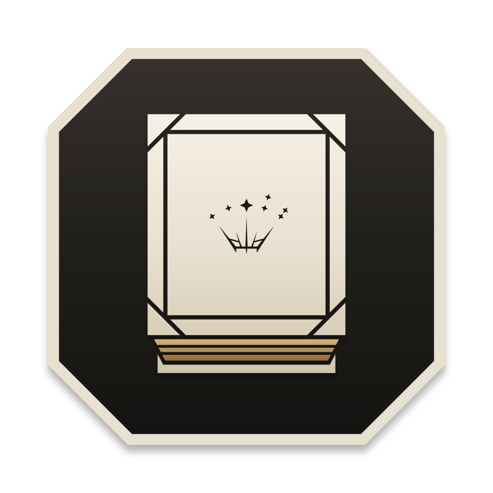
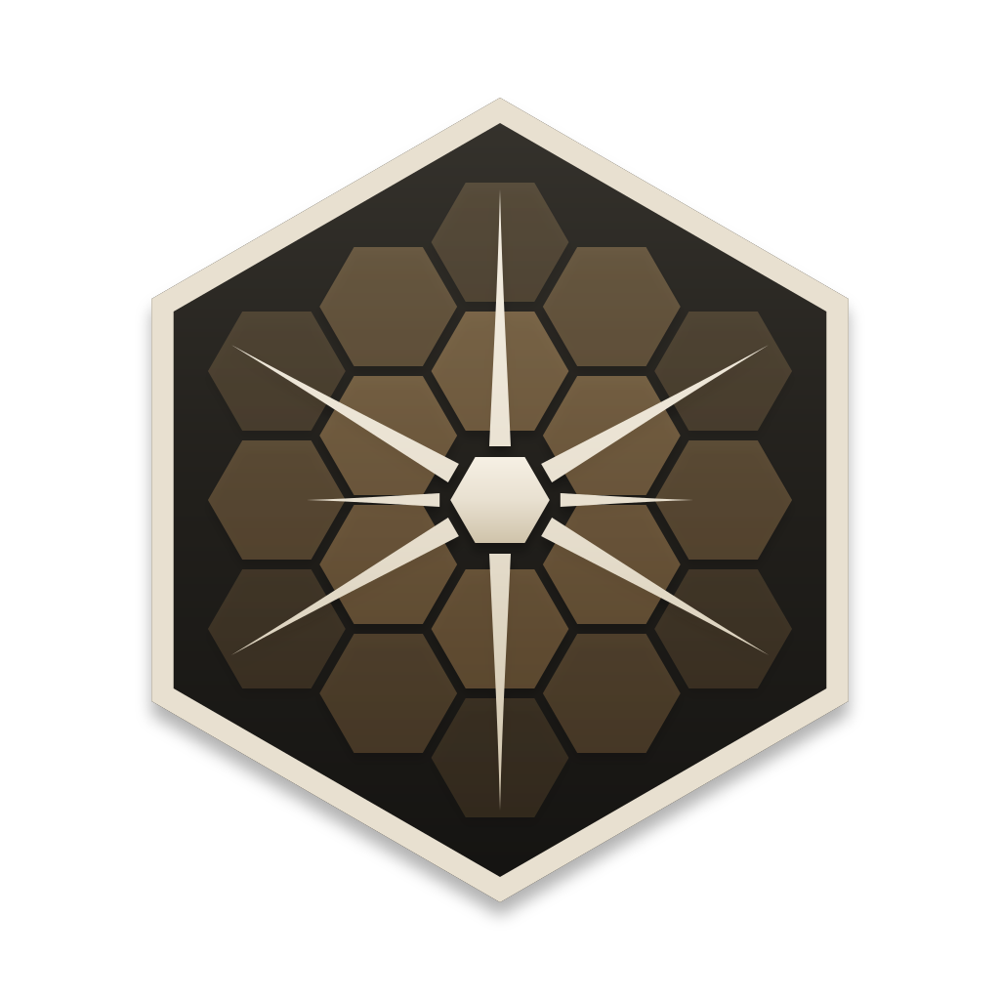
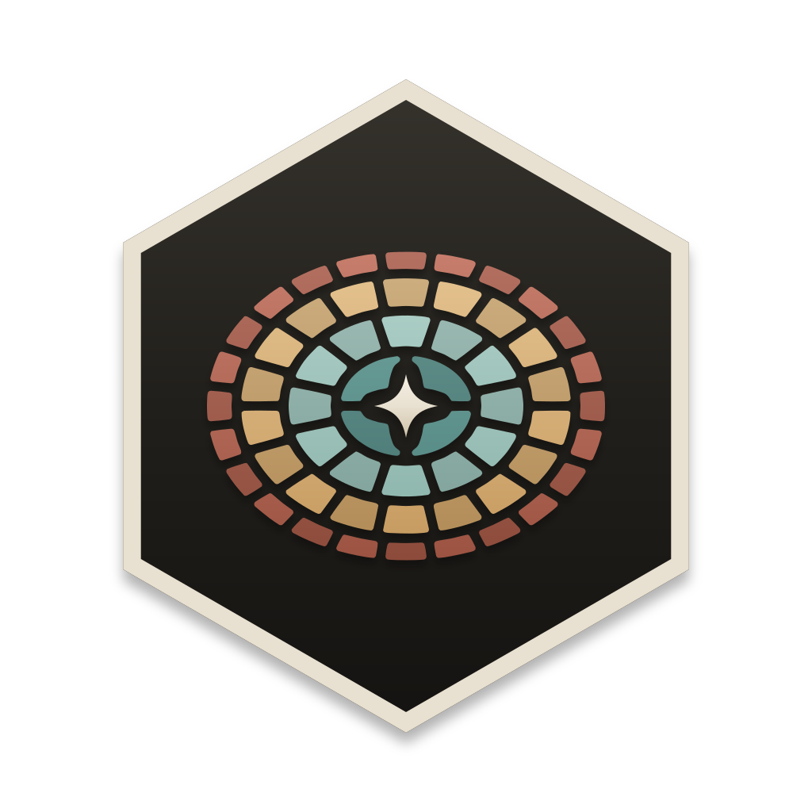

Sternbild
Sternbild is an organization that builds applications and runs research projects. Its name means constellation. The applications are Alidade, Astrolabe, Compass and Caliper. The research projects are Alioth, Polaris, Nebula, Orion and Quasar, each named after a star or an object in the sky. Atlas is the organization's knowledge base.
The identity is small and consistent. It has one logo, one seal and one drawing system for every mark, a warm night palette with bronze as its only accent, two typefaces in a single weight, square corners and 1 px rules.
| Part | What it is |
|---|---|
| Name | Sternbild in running text; STERNBILD in Sternbild Display, widely tracked, as a name on its own |
| Logo | The flat-topped diamond with the crown and seven stars, on its own shaded ground |
| Seal | The same drawing in flat white, with no ground |
| Marks | One for each application and research project, in the seal's drawing system |
| Colour | Night grounds, parchment text in three strengths, bronze used rarely |
| Type | Sternbild Display for names; IBM Plex Sans Condensed for everything else |
| Structure | Alignment, 1 px rules and type instead of boxes; square corners |
Logo and seal
The logo and the seal are one drawing. A crown of five blades rises from one foot inside a flat-topped diamond, with seven four-point stars on rays 18° apart. The logo sets the drawing on its own shaded diamond with five faint beams, and it is used at every size on screen. The seal is the flat white drawing with no ground, used where it stands alone on the night ground, as at the website's opening.
- File
assets/sternbild-logo.svg- Canvas
- 1024 × 1024
- Colours
- White drawing on a charcoal diamond shaded from #36332d to #141311
- File
assets/sternbild-seal.svg- Canvas
- 915.6 × 915.6, cropped to the frame
- Colours
- White only
Clear space and minimum size
sternbild-32.png and sternbild-180.png.Both values come from an October study for the website. The website's masthead currently sets the logo at 38 px.
Placement
The logo is always visible and never the subject of a page. It marks the page at the top left of the masthead, beside the name, and returns in the footer. The seal appears only on its own, on the night ground.
| Where | Size | File |
|---|---|---|
| Masthead, beside STERNBILD | 40 px | sternbild-logo.svg |
| Footer, beside STERNBILD | 72 px | sternbild-logo.svg |
| The website's opening | full screen | sternbild-seal.svg |
| Browser tab | 32 px | sternbild-32.png |
| Home screen | 180 px | sternbild-180.png |
| Link preview | 1200 × 630 | og.png |
What not to do
- Do not redraw, recolour or rearrange the logo or the seal. Use the files as they are.marks drawing notes
- Do not use a superseded version, such as the circular logo or an older lockup.October site study; marks drawing notes
- Do not set the name STERNBILD in any typeface other than Sternbild Display.brand book
- Do not place the seal, its fan of rays or its stars inside an application as decoration.Caliper interface specification
- Do not give the crown to a product mark. Product marks borrow only the language of its blades.marks drawing notes
- Do not make the logo the centre of a page. It marks the page; it is not the page's subject.placement on the website
Marks
Each application and research project has a mark. Every mark is drawn in the seal's own system and sits in a frame that shows its kind. Applications and the knowledge base wear a square with 45° corner cuts, research projects wear a hexagon with its points up and down, and the flat-topped diamond belongs to the house alone.
Applications

AlidadeLearning harnessalidade-icon.svg- AstrolabeAI augmented productivity frameworkastrolabe-icon.svg
- CompassPractice platformcompass-icon.svg
- CaliperMachine learning visualization frameworkcaliper-icon.svg
Knowledge base

AtlasCentral knowledge baseatlas-icon.svg
Research

AliothArtificial intelligence researchalioth-icon.svg- PolarisBusiness systemspolaris-icon.svg

NebulaSemiconductor designnebula-icon.svg- OrionApplied machine learningorion-icon.svg
- QuasarQuantitative financequasar-icon.svg
A research project without a mark stands in the empty hexagon, placeholder-hexagon.svg.
The drawing system
| Element | Rule |
|---|---|
| Construction | Five rays 18° apart from one point, at −36°, −18°, 0°, 18° and 36° from the upright. Diamond sides at 45°. |
| Stars | Four straight triangular arms with concave sides. Only the inner corners are softened. |
| Blades | Tapered, filled and sharp, with their ends cut at the seal's angles. |
| Weights | Two only: the frame's line and the filled blades. |
| Frame | A parchment line 22.5 units wide on the 1024 canvas, its outer edge on the edge of the tile. |
| Colour | Shaded parchment shapes on a shaded charcoal tile, with exactly one bronze accent. The colours are in section IV. |
| Crossings | Where one part passes over another, an even gap of about 11 units on the 1024 canvas. |
| Proportion | The drawing fills 65 to 75% of the frame's height and is centred by eye, not by its bounding box. |
| Small sizes | A mark must read at 32 px, with no hairlines or specks. |
| Never | Freehand swooshes, calligraphic flourishes, text, clip art, or the seal's crown. |
From the logo notes and the marks briefs in the brand folders.
At 32 px
Colour
The ground is a warm night in three depths. Text is parchment in three strengths. Bronze is the only hue, and it is used rarely. In an application, colour belongs to the data; the chrome stays monochrome.
Palette
| Token | Hex | Use |
|---|---|---|
| Grounds | ||
| deep | #12110f | The website page; the application status bar, plot fields and wells |
| ground | #181715 | The application window and panes |
| plate | #201f1c | Pane headers, menus and the selected row |
| plate-hover | #2a2925 | A hovered row, menu item or plate in an application |
| deep-hover | #161513 | A hovered row on the website |
| Rules | ||
| rule | #4b4945 | Rules that open a list or table, and control outlines |
| rule-faint | #2c2b28 | Rules between rows; the masthead and footer rules |
| Text | ||
| parchment | #e8e0d0 | Primary text, names and values |
| secondary | #c1baaa | Descriptions, labels and status text |
| faint | #8f897c | Role lines, placeholders and disabled items |
| Accent | ||
| bronze | #b38b59 | Focus, selection, keys and section numerals |
| bronze-hover | #c49b68 | Bronze under the pointer, on the website |
| The website's opening | ||
| aura | #1b1a17 | The ground lifting toward the horizon, fading into deep |
| construction | #6a655a | The horizon and the rings of the opening drawing |
| light | #fff6e8 | The opening's one colour of light; never text |
| white | #ffffff | The name on the opening, and the seal |
Roles
Code uses roles, not palette names, so that each colour has one job and a change to how a role looks reaches every project without an edit. Each role is a custom property of its own name, such as --sb-text-muted, and points at the palette.
| Role | Palette | Use |
|---|---|---|
| background | deep | The website page |
| background-app | ground | The application window and panes |
| well | deep | Status bar, plot fields and wells |
| surface | plate | Pane headers and menus |
| surface-hover | plate-hover | A hovered row or plate in an application |
| selected | plate | The selected row, with its text in bronze |
| row-hover | deep-hover | A hovered row on the website |
| rule | rule | Opening rules and control outlines |
| rule-faint | rule-faint | Rules between rows |
| text | parchment | Primary text |
| text-muted | secondary | Secondary text |
| text-faint | faint | Faint text |
| accent | bronze | The single accent |
| accent-hover | bronze-hover | The accent under the pointer, on the website |
| focus | bronze | The 1 px keyboard focus outline |
Bronze
Bronze marks where the reader is and what is chosen, and nothing else. It appears in these places only.
- Section numerals, as on this page.
- Keyboard focus, as a 1 px outline.
- Selection: the text of the selected row, and the title and closing rule of the pane that has focus.
- Keys on buttons under the pointer, and the key of the primary action.
- On the website, a name or an arrow under the pointer, in bronze-hover.
- In each mark, exactly one accent.
Bronze is never a fill, a button, a heading or running text.
Contrast
Ratios follow WCAG 2.2. AAA needs 7:1 for normal text; AA needs 4.5:1 for normal text and 3:1 for large text, which is 24 px, or 18.66 px when bold. Every text colour passes AA on every ground except faint on plate-hover, which passes only for large text. Ratios are cut, not rounded, to two decimals.
| Text | deep | ground | plate | plate-hover |
|---|---|---|---|---|
| parchment | 14.38AAA | 13.65AAA | 12.56AAA | 11.09AAA |
| secondary | 9.76AAA | 9.27AAA | 8.53AAA | 7.53AAA |
| faint | 5.42AA | 5.15AA | 4.73AA | 4.18AA large |
| bronze | 6.06AA | 5.76AA | 5.30AA | 4.68AA |
| bronze-hover | 7.40AAA | 7.02AAA | 6.46AA | 5.70AA |
| white | 18.87AAA | 17.91AAA | 16.48AAA | 14.55AAA |
On deep-hover, the website's hovered row, every pair passes AA; faint is the lowest at 5.24. A pair marked AA also passes AAA for large text. Rules are separators, not text: rule on deep is 2.10:1 and rule-faint is 1.33:1. An outline that is the only sign of a control needs 3:1, so such outlines are drawn in parchment, as the primary action is.
Data
Plots colour their classes with five pigments in a fixed order, never cycled. The pigments are for data only. Text never takes a data colour; a dot beside the word carries it.
| Order and token | Hex | On deep | On ground |
|---|---|---|---|
| 1 smalt | #4677ad | 4.04 | 3.84 |
| 2 verdigris | #3ca99c | 6.60 | 6.26 |
| 3 olive-ochre | #867424 | 4.07 | 3.87 |
| 4 madder | #a35a74 | 3.83 | 3.64 |
| 5 slate | #55524c | 2.42 | 2.30 |
The first four pass the 3:1 that WCAG asks of graphics. Slate is the remainder class and recedes on purpose, so it always needs a key and a direct label.
Inside the marks
| Token | Hex |
|---|---|
| tile-light | #36332d |
| tile | #211f1b |
| tile-dark | #141311 |
| parchment-light | #f6f0e4 |
| parchment | #e8e0d0 |
| parchment-shade | #cfc3aa |
| bronze-light | #d8b27a |
| bronze | #b38b59 |
| bronze-shade | #8d6a3e |
These colours are for drawing marks. The interface never uses them.
Typography
Two typefaces in one weight. Sternbild Display sets names and numerals. IBM Plex Sans Condensed sets everything else. Hierarchy comes from size, colour, case and tracking, never from bold or italic.
Sternbild Display
ABCDEFGHIJKLM NOPQRSTUVWXYZ
0123456789 . , : ; · – - ’ ' ? !
- Role
- The name STERNBILD, application and project names, section headings and numerals, labels and navigation on the website. Never running text.
- Coverage
- 48 characters: the 26 capitals, the ten figures, the space and eleven marks of punctuation. It has no lowercase, no slash, no number sign and no ampersand, so it is always set in capitals and never given identifiers.
- Figures
- The figures are tabular, so they align in columns.
- Tracking
- Always tracked: 0.3 em for STERNBILD on the website, 0.22 em for names, 0.26 em for labels, 0.18 em for navigation, 0.06 em for headings, 0.1 em for an application's wordmark.
- Applications
- The wordmark only, never below 16 px.
- File
assets/fonts/SternbildDisplay-Regular.woff2, version 1.000- Licence
- Sternbild's own typeface, with original outlines drawn in 2026. No licence file accompanies it yet.
IBM Plex Sans Condensed
ABCDEFGHIJKLMNOPQRSTUVWXYZ
abcdefghijklmnopqrstuvwxyz
0123456789 → ↗ · × − –
- Role
- Running text, descriptions, tables, labels and every word in an application's interface.
- Figures
- Tabular by default, so columns of numbers align without a feature setting.
- Capitals
- The face has no small capitals. Labels are set in capitals and tracked 0.08 em.
- File
assets/fonts/IBMPlexSansCondensed-Regular.ttf, version 1.3, Regular only- Licence
- SIL Open Font License 1.1. Copyright © 2017 IBM Corp. with Reserved Font Name “Plex”. The licence is in
assets/fonts/OFL-ibmplexsanscondensed.txt.
Code
Caliper sets literal code, data cells, identifiers and paths in Source Code Pro, under the SIL Open Font License 1.1. The font file is not in this repository yet, so this page falls back to the system's monospace face.
Scale
- Sternbild
- Alioth
- Typography
- Caliper
- Applications
- Research
- Every value on this page comes from one file of design tokens.
- Ontology-driven business systems, and the security to protect their data at scale.
- Semiconductor design
- Keep clear space of at least half the diamond's width on every side.
- Contrast on ground
No text is smaller than 12 px. In an application, Dear ImGui sizes a face by its full height rather than its em, so the application sizes in the tokens (15, 14 and 15 for the interface, small labels and code, 16 for the wordmark) correspond to about 11.5, 10.8 and 11.9 CSS px.
Layout and rules
Structure comes from alignment, rules and type, not from boxes. At most one plate sits under anything, and nothing is boxed inside a box.
Grid
| Token | Value | Use |
|---|---|---|
| layout-max | 1160 px | The widest content column on the website |
| layout-gutter | 28 px | The side margin |
| layout-gutter-narrow | 18 px | The side margin on phones |
| layout-breakpoint | 820 px | Below it, every layout is one column |
| layout-masthead | 64 px | The masthead's height |
| layout-section | 110 px | The space above a section; 72 px on phones |
Spacing
Spacing sits on a 4 px base. The token's name is its multiple of 4 px. The 28 px gutter is step 7, and the 18 px phone margin is the one value off the base.
space-14space-28space-312space-416space-520space-624space-728space-832space-1040space-1248space-1456space-1664space-1872
Rules
Every rule is 1 px. There are no 2 px rules, no vertical rules inside tables, no zebra stripes and no cell borders.
- rule
- rule-faint
- faint, in tables
A list opens with a rule and divides its rows with faint rules. A table is set as a technical book sets it: a faint rule above, a rule under the heads, nothing between the rows and a faint rule below. The tables on this page follow that rule.
Corners
Corners are square everywhere: panes, fields, menus, plot fields, images and buttons. The one shaped corner is the 45° cut of 6 px on an application's primary action, shown in section VII. Circles are kept for data points.
Density
The website sets running text at 17 px with a line height of 1.65, in a column no wider than about 68 characters. An application is denser: rows of 22 px, pane headers of 24 px, pane padding of 8 px and 16 px between items on the status line. Empty space stays empty, with no badges, counters or filler.
Motion
Motion is brief and rare. A colour change under the pointer takes 150 ms, and a small lift takes 300 ms, both on the house easing, cubic-bezier(0.2, 0.65, 0.3, 1). An application opens quietly: nothing moves until the user picks something to look at. When the system asks for reduced motion, transitions and animation stop.
Application interface
Each application is a dense technical workstation in the Sternbild palette. The rules below were written for Caliper, the reference for application interfaces, and this guide adopts them for every application. They describe structure, not visual style, and they hold at any density.
- Text
- No taglines or explanatory sentences. Arrangement, icons and labels carry the meaning, so there are no pane subtitles, help lines or sentences beside controls.
- Labels are nouns or short noun phrases.
- A legend is a symbol and a noun.
- Things are called by their names, never by pointers such as “this item”, “current” or “here”. An item has the same name everywhere it appears.
- Tooltips show names and values only.
- Every mark in a view is labelled or keyed.
- Explanation
- Explanation lives in one place on demand, in a tour or behind an info icon beside a title, never on the surface.
- A tour is data. Each step names the region it is about, with a title and at most two plain sentences, kept in a file beside the code.
- Layout
- The subject of a view gets most of the window, with controls and secondary panes beside it.
- Panes are shares of the window, not fixed sizes. Each has a minimum that grows with the text scale, and no maximum.
- A view's content fills its view on opening, on resize and after the data change, without jumps.
- Different questions get different tabs rather than more panes.
- Behaviour
- Open quietly. Nothing plays or animates until the user picks something to look at.
- One place to change each thing. Every setting has exactly one control; other panes only show it.
- Selection is linked. Selecting an item in one view marks it in every other.
- Colour and size
- One colour key across the whole application.
- Annotation marks get their own colour, separate from the data classes.
- Text scale is a setting, applied to fonts, metrics and pane minimums together.
- Checking
- Panes are laid out as plain rectangles that tests can check without a window.
- Every layout change is checked with screenshots at two window sizes before it is accepted.
A pane, built from the tokens
| Name | Hex | On ground |
|---|---|---|
| deep | #12110f | 1.05 |
| ground | #181715 | 1.00 |
| plate | #201f1c | 1.08 |
| rule | #4b4945 | 1.99 |
| parchment | #e8e0d0 | 13.65 |
| secondary | #c1baaa | 9.27 |
| faint | #8f897c | 5.15 |
| bronze | #b38b59 | 5.76 |
The pane has focus, so its title, key and closing rule are bronze. The table is set in booktabs at 22 px rows, and the selected row sits on plate with its text in bronze. The primary action is the one plate with cut corners; the key button pairs a key with its action, the secondary action is a bare word, and an action that cannot run says why. The status line sits on deep under a rule.
Writing
These rules hold for everything Sternbild writes: the website, the applications, documents, figures and this guide.
- Titles are plain and descriptive. There are no taglines, slogans, colon subtitles, or questions used as titles.all writing
- Sentences are simple, complete and natural. They are neither clipped fragments nor marketing copy.all writing
- Each concept has one term, used the same way on the website, in the applications, in documents and in figures.all writing
- Things are called by their names. Labels in an interface are nouns or short noun phrases.Caliper interface principles
- Only facts with a source are stated. Dates, figures, people and versions are never invented.Caliper interface specification
- Sternbild and the product names are written with a capital initial in running text. Set alone in Sternbild Display, they appear in capitals.the website
Terms
| Term | Meaning |
|---|---|
| Sternbild | The organization |
| application | Alidade, Astrolabe, Compass or Caliper |
| research project | Alioth, Polaris, Nebula, Orion or Quasar |
| knowledge base | Atlas |
| logo | The shaded diamond drawing, sternbild-logo.svg |
| seal | The flat white drawing, sternbild-seal.svg |
| mark | The drawing that stands for one application or research project |
| frame | The shape that holds a drawing: diamond, cut-corner square or hexagon |
| ground | One of the dark background colours |
| plate | A raised surface, such as a pane header or a menu |
| rule | A 1 px line |
| accent | Bronze |
| token | One named value in design/tokens.json |
Using the guide
The tokens are the single source. The build turns them into a style sheet, and each release is published twice: once in a folder that always holds the latest release of its major version, and once in a numbered folder that never changes. This page is for people; the style sheet and the tokens file are the contract for software.
| File | What it is |
|---|---|
design/tokens.json | The source: the tokens in the W3C Design Tokens format, each with its source, and the version |
design/build.mjs | The build, in plain Node with no dependencies |
site/design/v1/ | sternbild.css and tokens.json for the latest 1.x release |
site/design/1.0.0/ | The same two files for release 1.0.0, frozen |
site/design/index.html | This page |
design/README.md | Where each value came from, the versioning plan and the open questions |
Building
node design/build.mjs # write the release to v1/ and to its numbered folder node design/build.mjs --check # fail if the published files differ from the tokens
The build reads the version from the tokens file. It refuses to change a numbered folder that already exists, so any change to a value needs a new version.
On a web page
Link the style sheet, then use the roles. Each token becomes a custom property named after its path, such as --sb-palette-deep or --sb-font-size-body; roles carry no group name, so role.text is --sb-text. On the hosted site the path below sits under the organization's GitHub Pages address.
<link rel="stylesheet" href="design/v1/sternbild.css">
body { background: var(--sb-background); color: var(--sb-text);
font: var(--sb-font-size-body)/var(--sb-leading-body) var(--sb-font-family-text); }
A site that should follow every 1.x release links v1/. A project that must not change on its own, such as a native application that generates its theme when it is built, pins a numbered folder such as 1.0.0/ and moves to a new release with a one-line version bump.
Versions
| Change | Version | Effect |
|---|---|---|
| A value is corrected | Patch, 1.0.0 to 1.0.1 | v1/ follows at once |
| A role or value is added; nothing is removed | Minor, 1.0 to 1.1 | v1/ follows at once |
| A role is renamed or removed | Major, 1.x to 2.0 | Published under v2/; projects stay on v1/ until they are moved |
Each release is tagged in this repository as design-v followed by its version, such as design-v1.0.0. This page describes 1.0.0, which has not been tagged yet. Generators for C++, Rust and other platforms will read the same tokens file; they are not built yet.